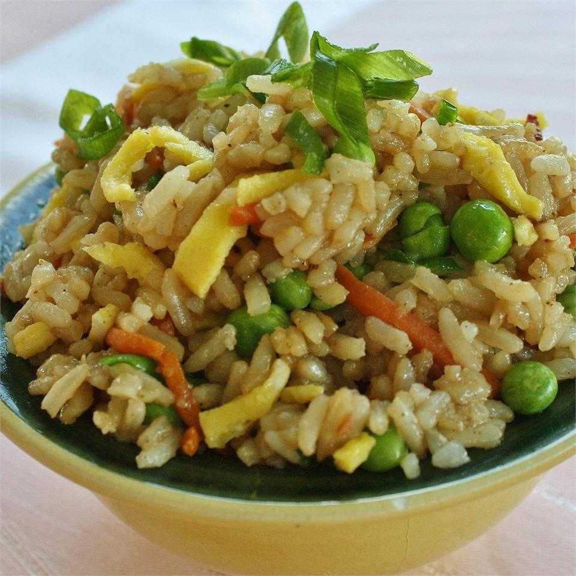

Fried Rice Recipe

Fried rice is a common dish in Asia. It is usually eaten by itself.
Fried rice is a dish of cooked rice that has been stir-fried in a wok or a frying
pan and is usually mixed with other ingredients such as eggs, vegetables, seafood,
or meat. It is often eaten by itself or as an accompaniment to another dish. Fried
rice is a popular component of East Asian, Southeast Asian and certain South Asian
cuisines, as well as a staple national dish of Indonesia. As a homemade dish, fried
rice is typically made with ingredients left over from other dishes, leading
to countless variations. [taken from Wikipedia]
Ingredients
- 1⅓ cups uncooked white rice
- 1⅔ cups water
- 3 eggs, lightly beaten
- ¼ teaspoon salt
- ⅛ teaspoon ground black pepper
- 3 teaspoons vegetable oil, divided
- ¼ pound bacon, cut into strips
- ⅛ cup soy sauce
- 1 (10 ounce) package frozen green peas, thawed
- 2 green onions, chopped
Directions
-
In a saucepan, bring water to a boil. Add rice and stir. Reduce heat, cover,
and simmer for 20 minutes. Meanwhile, season eggs with salt and pepper.
-
Heat 1 teaspoon oil in small frying pan. Pour in eggs. Coat the bottom of
the pan evenly with eggs; cook for about 3 minutes. Flip eggs, cook 1 minute
more, and transfer them to a cool surface. Let cool, then cut into thin
slices. Set aside.
-
Place bacon in a large, deep skillet. Cook over medium-high heat until evenly
browned. Drain, crumble, and set aside.
-
Spoon remaining 2 teaspoons oil into the skillet with the bacon fat. Stir
in cooked rice; break up any clumps and toss to coat with oil. Stir in bacon,
soy sauce, peas, eggs, and green onions. Stir and cook until heated through,
approximately 3 minutes.